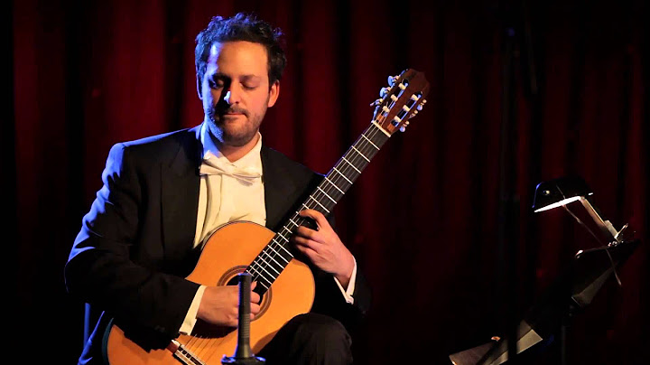
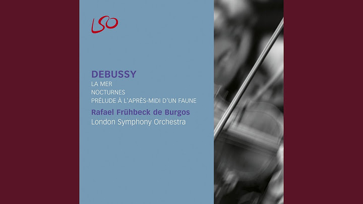
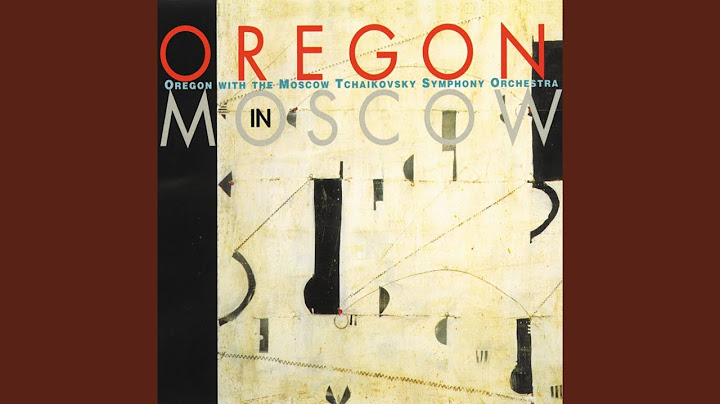
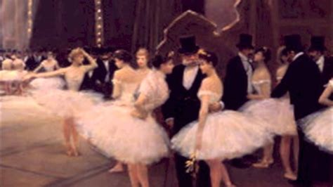
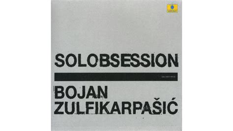
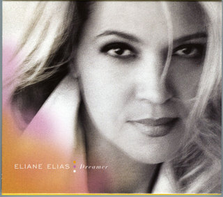
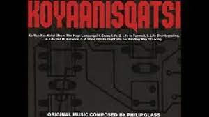

Appalachian Spring
Aaron Copland

Symphony op.21
Anton Webern

.jpg)

Confesiòn
Augustin Barrios Mangorè
Concerto for orchestra (1943)
Bela Bartòk
Music for Strings, Percussion and Celesta, III
Bela Bartòk



Nuages
Claude Debussy
Prélude à l'après-midi d'un faune
Claude Debussy
La Création du monde
Darius Milhaud
Suite in Fa# minore per due pianoforti op.6
Dmitri Shostakovich
Sinfonia n.5 in Re minore op.47
Dmitri Shostakovich
Notturno n.1
Erik Satie
13 Nocturnes
Gabriel Fauré
Cello sonata n.1
Gabriel Fauré
Canti della stagione alta
Ildebrando Pizzetti
Armonie poetiche e religiose
Ferenc Liszt
Le Boeuf sur le toit
Darius Milhaud
Symphony No.6 in E flat minor "Revolutionary"
Nikolai Myaskovsky
Quatuor pour la fin du temps
Olivier Messiaen
Alexander Nevsky Arise, Ye Russian People
Sergei Prokofiev



Anthem
Ralph Towner
Piano concerto in G - Argerich Abbado 1969
Maurice Ravel
Rhapsody in blue
George Gershwin
Tango pour Claude
Richard Galliano



Nocturnes
Pascal Rogé
Saudades do Brasil
Darius Milhaud
Fantasie op.17
Robert Schumann
Kinderszenen op.15
Robert Schumann
Symphony n.2 op.27
Sergey Rachmaninov
Afro-American Symphony n.1
William Grant Still



Solobsession
Bojan Zulfikarpasic
Cinemage
Ryuichi Sakamoto
Back to the basics
Ryuichi Sakamoto
Merry Christmas, Mr.Lawrence
Ryuichi Sakamoto
Organ Concertos
Georg Friedrich Handel
Complete guitar music
Miguel Llobet



Dreamer
Eliane Elias
Harmonies Poétiques et Religieuses, S.173
Ferenc Liszt
Adagio in si min. op. 11
Samuel Barber
The Symphonies
Sergey Prokofiev
Canto nascosto
Enrico Pieranunzi



Koyaanisqatsi
Philip Glass
Gaspard de la nuit
Maurice Ravel
Momenti musicali
Sergej Rachmaninov
9 Etudes-Tableaux Op.39
Sergej Rachmaninov
8 Etudes-Tableaux Op.33
Sergej Rachmaninov
Piano concerto n.2
Giuseppe Martucci
Symphonies
Carl Nielsen
Sonata del Guadalquivir
Angelo Gilardino
Opus clavicembalisticum
Kaikhosru Sorabji
Quaderno pianistico di Renzo
Sergio Calligaris
Preludio e fuga in Do maggiore K394
Wolfgang Amadeus Mozart
Sei studi da concerto op.35
Cecile Chaminade
Toccata, adagio and fugue in C major BWV 564
Reitze Smits
Trittico botticelliano
Ottorino Respighi